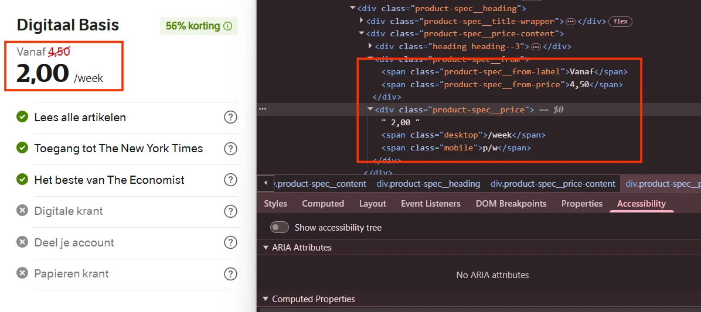
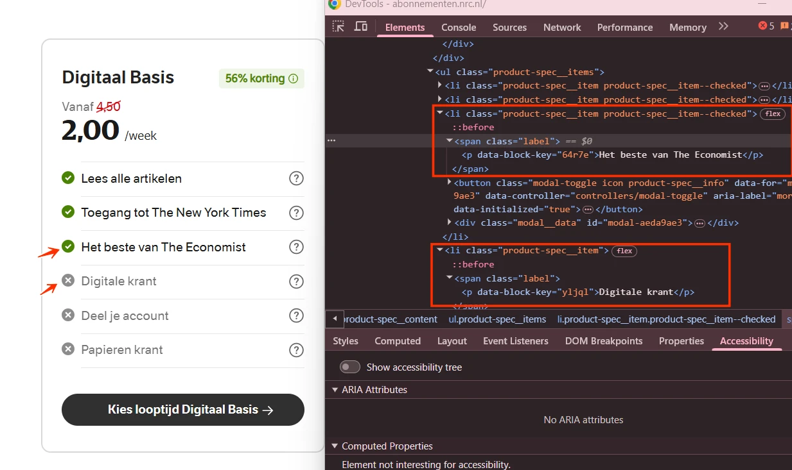
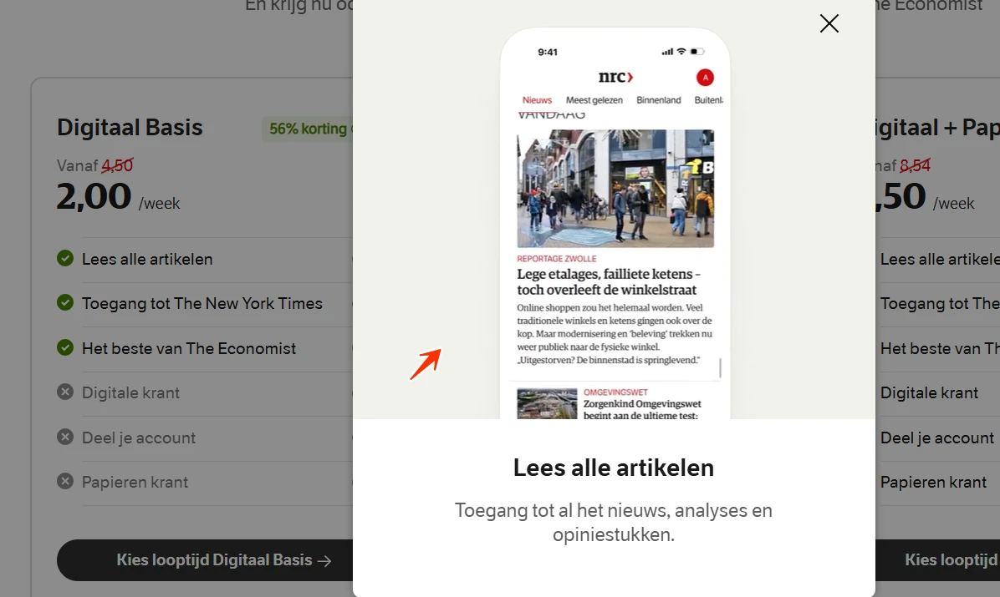
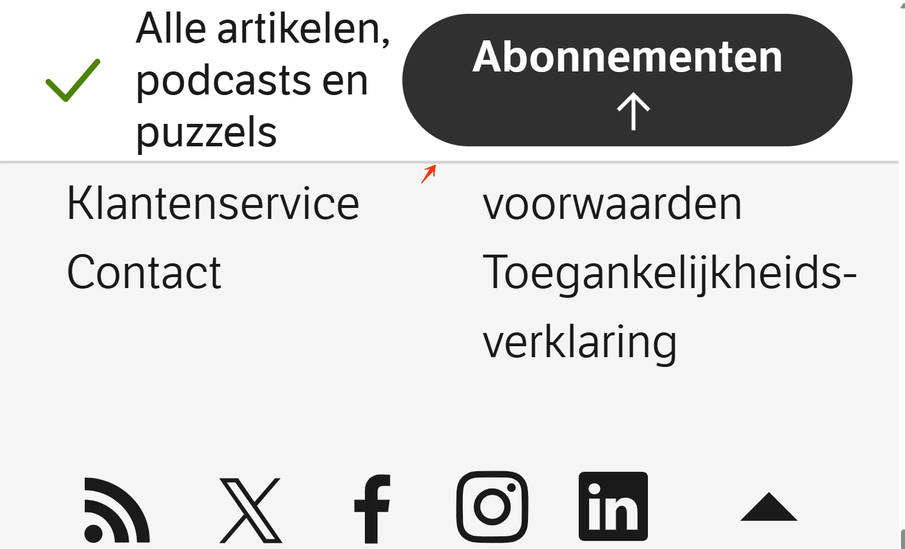
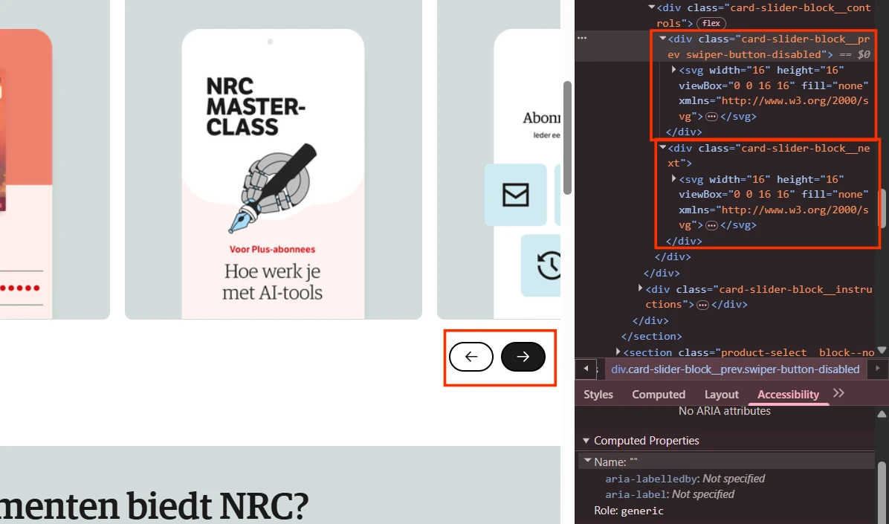

Audit digitale toegankelijkheid van website abonnementen.nrc.nl
Samenvatting
Wij hebben de website abonnementen.nrc.nl onderzocht tussen 20 en 29 mei 2026. Op dit moment is een deel van de succescriteria als voldoende beoordeeld. In dit rapport lees je welke punten nog verbetering behoeven en hoe deze kunnen worden aangepakt.
De pagina's van de website bevatten een <title>-element met teksten als "NRC-abonnement tot 59% korting. NRC biedt houvast | NRC Abonnementen", maar dit element staat in de <body> in plaats van in de <head>.
Moderne browsers herstellen deze ongeldige HTML-structuur op dit moment en tonen de paginatitel correct in het browsertabblad en aan hulpsoftware. Toch voldoet de markup niet aan de HTML-specificatie. Dat kan tot inconsistent gedrag leiden in verschillende browsers, hulpsoftware, automatiseringstools of toekomstige browserversies.
User story
Ik lees de website met een schermlezer. Wanneer ik een nieuw tabblad open, wil ik de paginatitel horen zodat ik weet waar ik ben. Ik verwacht dat elke pagina een duidelijke, unieke titel heeft.
Oplossing
Verplaats het title-element van de body naar de head.
Onder de kop "Word abonnee bij NRC" staat groene (#4A8405) tekst "56% korting" op een lichtgroene (#EFF5E7) achtergrond. Het contrast is 4,1:1. Normale tekst (kleiner dan 24px, of kleiner dan 18,66px vetgedrukt) vereist een contrast van minimaal 4,5:1 voor de leesbaarheid. Onvoldoende contrast maakt tekst moeilijk of onmogelijk te lezen voor mensen met slechtziendheid, kleurwaarnemingsproblemen of bij gebruik in een felle omgeving.
Ik heb een visuele beperking. Wanneer ik een pagina lees, kan ik tekst met weinig contrast tegen de achtergrond niet onderscheiden. Ik verwacht dat tekst altijd duidelijk afsteekt tegen de achtergrond.
Oplossing
Pas de tekstkleur of achtergrondkleur aan zodat het contrast minimaal 4,5:1 is. Gebruik een contrastchecker zoals de Colour Contrast Analyser om dit te verifiëren.
#3 - Popup-status wordt niet doorgegeven aan de schermlezer
Impact: GrootType: TechniekWCAG: 4.1.2EN: 9.4.1.2
Onder de kop "Word abonnee bij NRC" staan "56% korting"-knoppen die extra content openen en sluiten, maar de code geeft niet aan of dit venster open of dicht is. Hulpsoftware heeft deze informatie nodig om de status van het venster aan gebruikers door te geven, vooral aan mensen die blind of slechtziend zijn. Het attribuut aria-expanded kan de status aangeven.
Ik lees de website met een schermlezer. Wanneer ik op een knop druk om een popup te openen, kan ik niet horen of de popup open of dicht is. Ik verwacht dat de schermlezer de huidige status van de popup aankondigt.
Oplossing
Zet aria-expanded="true" wanneer het venster open is en aria-expanded="false" wanneer het dicht is. aria-expanded werkt alleen betrouwbaar als de focus op de knop blijft. Als de focus weg kan bewegen van de knop terwijl het venster open is, gebruik dan visueel verborgen tekst om de status van het venster aan te geven. Werk die tekst dynamisch bij zodra de status verandert.
#4 - Geen verschil in de HTML tussen de oude en nieuwe prijs
Impact: GrootType: TechniekWCAG: 1.3.1EN: 9.1.3.1

Onder de kop "Word abonnee bij NRC" staan abonnementsopties met prijzen. Sommige abonnementen hebben een verlaagde prijs, visueel aangegeven met een doorgehaalde oorspronkelijke prijs en een nieuwe prijs. Deze prijswijziging staat niet in de HTML, waardoor die ontoegankelijk is voor schermlezergebruikers.
Ik lees de website met een schermlezer. Wanneer ik een product met een aanbiedingsprijs bekijk, hoor ik twee bedragen zonder uitleg. Ik verwacht dat mijn schermlezer mij vertelt welk bedrag de oude prijs is en welk de nieuwe.
Oplossing
Voeg visueel verborgen tekst of toegankelijke namen toe aan zowel de oude als de nieuwe prijs, bijvoorbeeld met aria-label.
#5 - Informatief icoon heeft geen tekstalternatief
Impact: GrootType: ContentWCAG: 1.1.1EN: 9.1.1.1

Onder de kop "Word abonnee bij NRC" staan abonnementsopties met een lijst van functies. Een deel van de lijst is met iconen visueel gemarkeerd als beschikbaar voor een specifiek abonnement, en een deel als niet beschikbaar. Deze iconen hebben geen tekstalternatief. Schermlezergebruikers kunnen de informatie die het icoon overbrengt niet waarnemen. Alle niet-decoratieve iconen moeten een tekstalternatief hebben dat dezelfde betekenis overbrengt als het visuele element.
Ik lees de website met een schermlezer. Wanneer ik een informatief icoon tegenkom, kondigt mijn schermlezer niets aan. Ik verwacht dat mijn schermlezer beschrijft wat elk icoon betekent.
Oplossing
Geef dit icoon een tekstalternatief, bijvoorbeeld met aria-label, aria-labelledby of visueel verborgen tekst die de betekenis of functie beschrijft.
#6 - Knoppen met dezelfde naam voeren een andere functie uit
Onder de kop "Word abonnee bij NRC" staan abonnementsopties met knoppen met een "?"-icoon. Deze knoppen hebben dezelfde toegankelijke naam: "more info". Toch voeren ze verschillende functies uit. Dat is verwarrend voor schermlezergebruikers, omdat de identieke tekst geen onderscheid maakt tussen de verschillende acties.
Ik lees de website met een schermlezer. Wanneer ik een knop zoek, hebben meerdere knoppen dezelfde naam maar voeren ze verschillende acties uit. Ik verwacht dat elke knop een unieke naam heeft die past bij wat die doet.
Oplossing
Zorg dat de knopnamen duidelijk en uniek beschrijven welke actie elke knop uitvoert. Knoppen met verschillende functies moeten onderscheidende, beschrijvende namen hebben.
#7 - Dialoogvensters hebben identieke toegankelijke namen
Onder de kop "Word abonnee bij NRC" staan abonnementsopties met knoppen met een "?"-icoon die modale dialoogvensters openen. De toegankelijke namen van deze dialoogvensters zijn allemaal identiek: "modal". Omdat de dialoogvensters geen unieke, beschrijvende naam hebben, kunnen gebruikers van hulpsoftware moeilijk begrijpen wat het doel van elk venster is of de vensters van elkaar onderscheiden.
Als schermlezergebruiker heb ik duidelijke, unieke toegankelijke namen voor dialoogvensters nodig, zodat ik begrijp welk venster is geopend en het van andere vensters op de pagina kan onderscheiden.
Oplossing
Geef elk dialoogvenster een unieke, beschrijvende toegankelijke naam die de inhoud of het doel weergeeft. Gebruik bijvoorbeeld namen die verwijzen naar de specifieke abonnementsoptie of de informatie in het venster.
#8 - Kop is niet correct gemarkeerd
Impact: MediumType: ContentWCAG: 1.3.1EN: 9.1.3.1
Onder de kop "Word abonnee bij NRC" staan abonnementsopties met knoppen met een "?"-icoon die modale dialoogvensters openen. In die vensters zijn teksten zoals "Lees alle artikelen" niet als kop gemarkeerd. Wanneer tekst als kop functioneert maar niet correct is gemarkeerd, verliest die zijn semantische betekenis en wordt die ontoegankelijk voor bezoekers die afhankelijk zijn van hulpsoftware zoals schermlezers. Koppen zijn essentieel om de inhoudsstructuur te navigeren en te begrijpen.
Ik lees de website met een schermlezer. Wanneer ik een pagina op koppen navigeer, mis ik koppen die alleen visueel zijn opgemaakt. Ik verwacht dat mijn schermlezer alle zichtbare koppen als kop herkent.
Oplossing
Markeer deze teksten met de juiste kop-elementen (h1 tot en met h6), zodat hun rol en hiërarchie in de inhoud kloppen.
#9 - Video speelt automatisch af en heeft geen stopknop
Impact: MediumType: ContentWCAG: 2.2.2EN: 9.2.2.2

Onder de kop "Word abonnee bij NRC" staan abonnementsopties met knoppen met een "?"-icoon die modale dialoogvensters openen. In die vensters spelen video's die automatisch afspelen en niet gepauzeerd of gestopt kunnen worden. Automatisch afspelende media kan storend zijn voor mensen met een cognitieve beperking en hen belemmeren om zich op andere content te concentreren.
Ik raak afgeleid door beweging op een pagina. Wanneer ik een pagina open en er speelt automatisch een video, kan ik me niet op de tekst concentreren. Ik verwacht dat ik de video kan pauzeren, stoppen of verbergen.
Oplossing
Voeg een duidelijke, bereikbare knop toe om deze video te stoppen, pauzeren of verbergen. Dit geldt voor alle bewegende, knipperende, scrollende of automatisch actualiserende content die tegelijk met andere informatie verschijnt, automatisch start en langer dan vijf seconden speelt.
#10 - Logo heeft geen tekstalternatief: het alt-attribuut is leeg
Impact: GrootType: TechniekWCAG: 1.1.1EN: 9.1.1.1
Onder de kop "Alles van The New York Times én het beste van The Economist" staat een afbeelding met drie logo's. Deze afbeelding heeft geen tekstalternatief: het alt-attribuut is leeg. Logo's zijn informatieve afbeeldingen en hebben een tekstalternatief nodig. De alt-tekst moet de volledige tekst van het logo bevatten. Zo begrijpen bezoekers die de afbeelding niet kunnen zien toch wat erop staat.
User story
Ik lees de website met een schermlezer. Wanneer ik de pagina open, kan ik niet zien welke website ik bezoek, omdat het logo geen tekstalternatief heeft. Ik verwacht dat het logo een tekstalternatief heeft met de naam van de organisatie.
Oplossing
Voeg een tekstalternatief toe aan deze afbeelding.
#11 - Onzichtbaar element krijgt toetsenbordfocus
Impact: GrootType: TechniekWCAG: 2.4.3EN: 9.2.4.3
Op deze pagina belandt de toetsenbordfocus op een onzichtbaar interactief element na de link "Contact" in de header. Onzichtbare interactieve elementen horen niet in de focusvolgorde. Dit kan leiden tot per ongeluk activeren en tot verwarring, vooral voor mensen die met het toetsenbord navigeren.
User story
Ik gebruik de website met een toetsenbord en een schermlezer. Wanneer ik met Tab door de pagina ga, belandt mijn focus soms op onzichtbare elementen die ik niet kan zien. Ik verwacht dat de focus alleen op zichtbare elementen belandt.
Oplossing
Zorg dat alleen zichtbare interactieve elementen focusbaar zijn en dat de focusvolgorde een logische volgorde aanhoudt.
#12 - Elementen met toetsenbordfocus worden bedekt
Impact: GrootType: TechniekWCAG: 2.4.11EN:

Op deze pagina bedekt een sticky header een deel van de paginacontent wanneer de website naar een kleinere resolutie wordt verkleind. Interactieve elementen zoals de link "Hulp nodig?" krijgen nog wel toetsenbordfocus, maar de focus-indicator verdwijnt achter de sticky header. Daardoor kunnen toetsenbordgebruikers niet zien waar de focus staat.
Ik gebruik de website met een toetsenbord. Wanneer ik door de pagina navigeer, verdwijnt het gefocuste element achter de sticky balk bovenaan. Ik verwacht dat ik altijd zie welk element focus heeft.
Oplossing
Zorg dat de sticky header geen interactieve elementen of hun focus-indicator bedekt. Pas bijvoorbeeld de z-index aan, herpositioneer elementen, of verklein de header dynamisch op kleinere schermen.
#13 - Kop is niet correct gemarkeerd
Impact: MediumType: ContentWCAG: 1.3.1EN: 9.1.3.1
In de sectie met verborgen content "Wat ga ik betalen na de kortingsperiode?" is de tekst "Reguliere prijzen per week:" niet als kop gemarkeerd. Wanneer tekst als kop functioneert maar niet correct is gemarkeerd, verliest die zijn semantische betekenis en wordt die ontoegankelijk voor bezoekers die afhankelijk zijn van hulpsoftware zoals schermlezers. Koppen zijn essentieel om de inhoudsstructuur te navigeren en te begrijpen.
Ik lees de website met een schermlezer. Wanneer ik een pagina op koppen navigeer, mis ik koppen die alleen visueel zijn opgemaakt. Ik verwacht dat mijn schermlezer alle zichtbare koppen als kop herkent.
Oplossing
Markeer deze teksten met de juiste kop-elementen (h1 tot en met h6), zodat hun rol en hiërarchie in de inhoud kloppen.
Onder de kop "Wat betaal je voor het Digitaal Basis-abonnement?" staat een datatabel. De juiste markup ontbreekt. Een datatabel heeft een koprij met cellen die bij de datacellen horen. De schermlezer heeft de juiste markup nodig om die relatie aan een blinde gebruiker door te geven.
Ik lees de website met een schermlezer. Wanneer ik een tabel navigeer, hoor ik alleen losse getallen en teksten zonder context. Ik verwacht dat mijn schermlezer de kop bij elke cel aankondigt.
Oplossing
Plaats de kopcellen in <th>-elementen en de datacellen in <td>-elementen.
#15 - Kop is niet correct gemarkeerd
Impact: MediumType: ContentWCAG: 1.3.1EN: 9.1.3.1
Onder de kop "Ontdek onze andere abonnementen" staan andere koppen die niet als kop zijn gemarkeerd: "Digitaal Plus" en "Digitaal + Papier". Wanneer tekst als kop functioneert maar niet correct is gemarkeerd, verliest die zijn semantische betekenis en wordt die ontoegankelijk voor bezoekers die afhankelijk zijn van hulpsoftware zoals schermlezers. Koppen zijn essentieel om de inhoudsstructuur te navigeren en te begrijpen.
Ik lees de website met een schermlezer. Wanneer ik een pagina op koppen navigeer, mis ik koppen die alleen visueel zijn opgemaakt. Ik verwacht dat mijn schermlezer alle zichtbare koppen als kop herkent.
Oplossing
Markeer deze teksten met de juiste kop-elementen (h1 tot en met h6), zodat hun rol en hiërarchie in de inhoud kloppen.
Onder de kop "De voordelen van een NRC-abonnement" staat een slider met rode (#D30910) tekst op een grijze (#D2DCDB) achtergrond, bijvoorbeeld "Vanaf Plus-abonnement". Het contrast is 3,9:1. Normale tekst (kleiner dan 24px, of kleiner dan 18,66px vetgedrukt) vereist een contrast van minimaal 4,5:1 voor de leesbaarheid. Onvoldoende contrast maakt tekst moeilijk of onmogelijk te lezen voor mensen met slechtziendheid, kleurwaarnemingsproblemen of bij gebruik in een felle omgeving.
User story
Ik heb een visuele beperking. Wanneer ik een pagina lees, kan ik tekst met weinig contrast tegen de achtergrond niet onderscheiden. Ik verwacht dat tekst altijd duidelijk afsteekt tegen de achtergrond.
Oplossing
Pas de tekstkleur of achtergrondkleur aan zodat het contrast minimaal 4,5:1 is. Gebruik een contrastchecker zoals de Colour Contrast Analyser om dit te verifiëren.
#17 - Kop is niet correct gemarkeerd
Impact: MediumType: ContentWCAG: 1.3.1EN: 9.1.3.1
Onder de kop "De voordelen van een NRC-abonnement" staat een slider. In elke slide zijn de koppen niet als kop gemarkeerd, bijvoorbeeld "Vanaf Basis". Wanneer tekst als kop functioneert maar niet correct is gemarkeerd, verliest die zijn semantische betekenis en wordt die ontoegankelijk voor bezoekers die afhankelijk zijn van hulpsoftware zoals schermlezers. Koppen zijn essentieel om de inhoudsstructuur te navigeren en te begrijpen.
Ik lees de website met een schermlezer. Wanneer ik een pagina op koppen navigeer, mis ik koppen die alleen visueel zijn opgemaakt. Ik verwacht dat mijn schermlezer alle zichtbare koppen als kop herkent.
Oplossing
Markeer deze teksten met de juiste kop-elementen (h1 tot en met h6), zodat hun rol en hiërarchie in de inhoud kloppen.
#18 - Knop heeft geen correcte rol en naam
Impact: GrootType: TechniekWCAG: 4.1.2EN: 9.4.1.2

Onder de kop "De voordelen van een NRC-abonnement" staat een slider. Daaronder staan knoppen met pijl-iconen. Deze knoppen hebben niet de juiste toegankelijke rol en naam. Daardoor kunnen schermlezers ze niet als knop herkennen en zijn ze ontoegankelijk voor blinde gebruikers. Zij weten niet dat dit element interactief is en aangeklikt kan worden.
Ik lees de website met een schermlezer. Wanneer ik de pagina navigeer, hoor ik niet dat een element een knop is. Ik verwacht dat mijn schermlezer aankondigt dat ik het kan activeren.
Oplossing
Geef de knop de juiste rol, op een van deze manieren:
Gebruik het button-element. Dat levert vanzelf de juiste knop-rol op.
Voeg role="button" toe. Als je een ander element gebruikt — wat over het algemeen niet wordt aanbevolen — geef je het zo expliciet de juiste rol.
Geef de knop een toegankelijke naam, bijvoorbeeld met het aria-label-attribuut.
#19 - Content gaat verloren bij aangepaste tekstafstand
Onder de kop "De voordelen van een NRC-abonnement" staat een slider. Wanneer bezoekers de tekstafstand uit dit succescriterium toepassen, wordt de tekst in de slider deels onzichtbaar en onleesbaar. Bezoekers passen de tekstafstand vaak aan met eigen CSS voor een betere leesbaarheid. Deze pagina houdt de content niet zichtbaar bij zulke aanpassingen. Alle informatie moet toegankelijk en leesbaar blijven, ook bij aangepaste tekstopmaak.
Ik lees langzamer door een cognitieve beperking, slechtziendheid of dyslexie. Wanneer ik de afstand tussen letters en regels vergroot, verdwijnt of versnijdt sommige tekst. Ik verwacht dat alle tekst zichtbaar en leesbaar blijft nadat ik mijn instellingen aanpas.
Oplossing
Maak de hoogte en breedte van de containers responsive, zodat de content meebeweegt met de aangepaste tekstafstand.
#20 - Slides wisselen alleen met een gebaar of de muisaanwijzer
Onder de kop "De voordelen van een NRC-abonnement" staat een slider, oftewel carrousel. Op kleine schermen (bij 320px-resolutie) kun je in deze carrousel de slides horizontaal slepen om te navigeren. WCAG vereist dat als een specifieke actie zoals vegen of slepen nodig is om een component te bedienen, er ook een eenvoudiger alternatief beschikbaar is. Dat is er voor mensen die geen precieze gebaren kunnen maken of die hulpsoftware gebruiken, zoals een head pointer, eye-tracking of een spraakgestuurde muisemulator. Sommige aanwijsapparaten kunnen geen multi-touch- of trackpad-gebaren maken, of missen de precisie voor complexe gebaren.
Ik heb beperkte motoriek en kan niet betrouwbaar vegen of slepen. Wanneer een carrousel alleen op veeg- of sleepgebaren reageert, blijf ik op één slide hangen. Ik verwacht een alternatief met één klik, zoals een vorige- en volgende-knop.
Oplossing
Maak de carrousels ook bedienbaar met een enkele klik of tik, of met knoppen of pijltjestoetsen.
Onder de kop "Persoonlijke gegevens" staat een formulier. De label-elementen zijn niet expliciet gekoppeld aan de bijbehorende invoervelden. Label-elementen moeten met het for-attribuut aan hun invoerveld worden gekoppeld; die waarde moet overeenkomen met het id-attribuut van het invoerveld. Deze koppeling geeft het invoerveld een toegankelijke naam en vergroot het klikbare gebied van het label, wat de bruikbaarheid en toegankelijkheid verbetert. Omdat de toegankelijke naam nu ontbreekt, faalt deze bevinding ook op 4.1.2 en op 2.5.3, want de zichtbare tekst van de labels staat niet in de toegankelijke naam. Hetzelfde probleem komt hieronder voor onder de kop "Ingangsdatum" bij de radioknoppen.
User story
Ik gebruik de website met spraakbediening. Wanneer ik het zichtbare label van een formulierveld uitspreek om het te activeren, reageert de website niet op mijn commando. Ik verwacht dat ik elk veld kan activeren door de zichtbare labeltekst uit te spreken.
Oplossing
Koppel de label-elementen aan hun invoervelden met het for-attribuut op het label. In dat attribuut zet je het id van het invoerveld waar het label bij hoort.
#22 - Foutmeldingen zijn niet gekoppeld aan de invoervelden
Impact: GrootType: TechniekWCAG: 1.3.1EN: 9.1.3.1
Onder de kop "Persoonlijke gegevens" staat een formulier. De relaties tussen de foutmeldingen en de bijbehorende invoervelden zijn niet programmatisch vastgelegd. Daardoor kan hulpsoftware de foutinformatie niet aan de gebruiker doorgeven.
User story
Ik lees de website met een schermlezer. Wanneer ik een formulierveld invul en een fout maak, wordt de foutmelding niet bij dat veld voorgelezen. Ik verwacht dat de schermlezer de foutmelding aankondigt zodra ik bij het veld kom.
Oplossing
Los dit op met het aria-describedby-attribuut op het invoerveld. Laat aria-describedby verwijzen naar het id van de foutmelding, zodat er een duidelijke koppeling ontstaat tussen het invoerveld en de fout.
Onder de kop "Persoonlijke gegevens" staat een formulier. Dit formulier met invoervelden voor persoonlijke gegevens, bijvoorbeeld achternaam, e-mailadres en telefoonnummer, mist het autocomplete-attribuut. Wanneer een formulier persoonlijke gegevens verzamelt, hoort bij deze invoervelden het juiste autocomplete-attribuut. Zo kunnen browsers en hulpsoftware gebruikers helpen, bijvoorbeeld door de velden automatisch in te vullen.
User story
Ik heb beperkte motoriek of last van trillingen. Wanneer ik een formulier met mijn naam en e-mailadres invul, kan mijn browser de velden niet automatisch invullen. Ik verwacht dat mijn browser of hulpsoftware persoonlijke velden automatisch invult.
Oplossing
Voeg het autocomplete-attribuut toe aan deze invoervelden. Meer informatie over dit attribuut en de juiste waarden staat op de WCAG-pagina over invoerdoelen.
#24 - Foutmelding wordt niet als statusbericht aangekondigd
Impact: GrootType: TechniekWCAG: 4.1.3EN: 9.4.1.3
Onder de kop "Persoonlijke gegevens" staat een formulier. Bij fouten verschijnt de foutmelding "Er ontbreken één of meerdere gegevens in het bovenstaande formulier…", maar die wordt niet door een schermlezer aangekondigd.
User story
Ik lees de website met een schermlezer. Wanneer ik een formulier verstuur en er verschijnt een foutmelding, blijft mijn schermlezer stil. Ik verwacht dat de foutmelding automatisch wordt voorgelezen zodra die verschijnt.
Oplossing
Voeg aria-live="polite" toe aan het element met de foutmelding, zodat de schermlezer de melding automatisch voorleest zodra die verschijnt.
Onder de kop "Persoonlijke gegevens" staat een formulier. Wanneer er onjuiste gegevens worden ingevoerd, wordt de labeltekst rood (#E36367) op een lichtroze (#FCE9EA) achtergrond, bijvoorbeeld "Voorletters". Het contrast is 2,9:1. Normale tekst (kleiner dan 24px, of kleiner dan 18,66px vetgedrukt) vereist een contrast van minimaal 4,5:1 voor de leesbaarheid. Onvoldoende contrast maakt tekst moeilijk of onmogelijk te lezen voor mensen met slechtziendheid, kleurwaarnemingsproblemen of bij gebruik in een felle omgeving.
User story
Ik heb een visuele beperking. Wanneer ik een pagina lees, kan ik tekst met weinig contrast tegen de achtergrond niet onderscheiden. Ik verwacht dat tekst altijd duidelijk afsteekt tegen de achtergrond.
Oplossing
Pas de tekstkleur of achtergrondkleur aan zodat het contrast minimaal 4,5:1 is. Gebruik een contrastchecker zoals de Colour Contrast Analyser om dit te verifiëren.
Op deze pagina staan meerdere formulieren die fieldset-elementen gebruiken zonder legend. Deze formulieren worden ingeleid door teksten als "Welk papieren abonnement past bij jou?", "Kies je voordeel" en "Persoonlijke gegevens". De groepen staan in fieldset-elementen, maar de legend-elementen ontbreken. Het legend-element is essentieel om de groep een label of naam te geven.
User story
Ik lees de website met een schermlezer. Wanneer ik een formulier met radioknoppen invul, hoor ik geen naam voor de groep. Ik verwacht dat mijn schermlezer mij vertelt bij welke vraag de opties horen.
Oplossing
Voeg in elke fieldset een legend-element toe met de tekst "Welk papieren abonnement past bij jou?", "Kies je voordeel", "Persoonlijke gegevens" en andere, zodat het doel van de groep duidelijk is.
#27 - Knop heeft geen toegankelijke naam
Impact: GrootType: TechniekWCAG: 4.1.2EN: 9.4.1.2
Op het kleine scherm staat naast de kop "NRC Weekend" een knop met een pijl-icoon. Deze knop heeft geen toegankelijke naam. Daardoor kunnen schermlezergebruikers het doel van de knop niet begrijpen.
User story
Ik lees de website met een schermlezer. Wanneer ik naar deze knop navigeer, hoor ik alleen 'knop' zonder verdere informatie. Ik verwacht dat mijn schermlezer de naam of het doel van de knop aankondigt.
Oplossing
Geef de knop een toegankelijke naam, op een van deze manieren:
Zichtbaar label: voeg een zichtbare tekstlabel naast de knop toe.
aria-label: gebruik het aria-label-attribuut op de knop voor een beschrijvend label.
Alt-tekst: gebruikt de knop een afbeelding, geef die dan een beschrijvende alt-tekst, bijvoorbeeld alt="Zoeken".
#28 - Schermlezer weet niet of extra content open of dicht is
Impact: GrootType: TechniekWCAG: 4.1.2EN: 9.4.1.2
Op het kleine scherm staat naast de kop "NRC Weekend" een knop met een pijl-icoon. Deze knop opent en sluit een sectie met verborgen content. De open- of dicht-status is visueel zichtbaar, maar wordt niet programmatisch aan schermlezers doorgegeven.
User story
Ik lees de website met een schermlezer. Wanneer ik een sectie met verborgen content activeer, kan ik niet horen of de sectie open of dicht is. Ik verwacht dat mijn schermlezer mij vertelt of een sectie uitgeklapt of ingeklapt is.
Oplossing
Los dit op een van deze manieren op:
Voeg het aria-expanded-attribuut toe aan de knop die de sectie open- en dichtklapt. Zet de waarde op true als de sectie open is en op false als die dicht is, en werk die dynamisch bij wanneer de status verandert.
Voeg visueel verborgen tekst toe die de status aangeeft, bijvoorbeeld "(open)" of "(dicht)", en werk die dynamisch bij wanneer de status verandert. Schermlezers lezen deze tekst voor, maar die is niet zichtbaar.
Wanneer deze pagina op een schermresolutie van 1280 bij 1024 pixels wordt bekeken en tot 400% wordt ingezoomd, gaat de volgende tekst deels verloren: "Betalen". Inzoomen tot 400% mag de leesbaarheid van informatieve elementen niet aantasten.
User story
Ik heb een visuele beperking. Wanneer ik diep op de pagina inzoom, verdwijnt sommige tekst deels van het scherm. Ik verwacht dat alle tekst zichtbaar en leesbaar blijft, ook bij hoge zoomniveaus.
Oplossing
Zorg dat alles blijft werken en leesbaar is bij inzoomen tot 400% op een scherm van 1280 bij 1024 pixels.
Op deze pagina staat bovenaan een logo dat met aria-hidden="true" verborgen is. Daardoor is het logo onzichtbaar voor schermlezers. Logo's zijn informatieve afbeeldingen en hebben een tekstalternatief nodig.
User story
Ik lees de website met een schermlezer. Wanneer ik de pagina open, kan ik niet zien welke website ik bezoek, omdat het logo geen tekstalternatief heeft. Ik verwacht dat het logo een tekstalternatief heeft met de naam van de organisatie.
Oplossing
Verwijder het aria-hidden-attribuut van het logo.
#31 - Kop is niet correct gemarkeerd
Impact: MediumType: ContentWCAG: 1.3.1EN: 9.1.3.1
De tekst "NRC Media B.V. via Stichting Mollie Payments" is niet als kop gemarkeerd. Wanneer tekst als kop functioneert maar niet correct is gemarkeerd, verliest die zijn semantische betekenis en wordt die ontoegankelijk voor bezoekers die afhankelijk zijn van hulpsoftware zoals schermlezers. Koppen zijn essentieel om de inhoudsstructuur te navigeren en te begrijpen.
User story
Ik lees de website met een schermlezer. Wanneer ik een pagina op koppen navigeer, mis ik koppen die alleen visueel zijn opgemaakt. Ik verwacht dat mijn schermlezer alle zichtbare koppen als kop herkent.
Oplossing
Markeer deze teksten met de juiste kop-elementen (h1 tot en met h6), zodat hun rol en hiërarchie in de inhoud kloppen.
#32 - Tekst is geen kop, h6-element gebruikt voor opmaak
Impact: MediumType: ContentWCAG: 2.4.6EN: 9.2.4.6
Op deze pagina is de tekst "€ 0,01" geen kop, maar onterecht gemarkeerd met een h6-element om de lettergrootte te vergroten. Kop-elementen gebruiken voor puur visuele opmaak is semantisch onjuist.
User story
Ik lees de website met een schermlezer. Wanneer ik door de koppen navigeer, kom ik een kop tegen die geen echte content inleidt. Ik verwacht dat elke kop het begin van een nieuwe sectie markeert.
Oplossing
Verwijder de kop-rol van deze tekst.
#33 - Tekst is geen kop, h1-h6-element gebruikt voor opmaak
Impact: MediumType: ContentWCAG: 1.3.1EN: 9.1.3.1
De tekst "Scan with your banking app to pay" op deze pagina is geen kop, maar onterecht gemarkeerd met een h3-element om de lettergrootte te vergroten. Onder deze kop staat geen content. Kop-elementen gebruiken voor puur visuele opmaak is semantisch onjuist.
User story
Ik lees de website met een schermlezer. Wanneer ik door de koppen navigeer, kom ik een kop tegen die geen echte content inleidt. Ik verwacht dat elke kop het begin van een nieuwe sectie markeert.
Oplossing
Omdat "Scan with your banking app to pay" geen kop is en er geen bijbehorende content is, verwijder je het kop-element of zet je de kop boven de QR-code.
Wanneer deze pagina op een schermresolutie van 1280 bij 1024 pixels wordt bekeken en tot 200% of 400% wordt ingezoomd, gaat de volgende tekst deels verloren: "NRC Media B.V. via Stichting Mollie Payments". Inzoomen tot 200% of 400% mag de leesbaarheid van informatieve elementen niet aantasten.
User story
Ik zoom tot 200% of 400% in om de pagina te lezen. Wanneer ik op deze pagina inzoom, verdwijnt sommige tekst of overlapt die andere content. Ik verwacht dat alle tekst zichtbaar en leesbaar blijft bij 200% en 400% zoom.
Oplossing
Zorg dat alles blijft werken en leesbaar is bij inzoomen tot 200% en 400% op een scherm van 1280 bij 1024 pixels.
Onder de kop "Download de NRC-app" staan links met logo's. Deze logo's zijn SVG-afbeeldingen en hebben geen tekstalternatief. Logo's zijn informatieve afbeeldingen en hebben een tekstalternatief nodig. De alt-tekst moet de volledige tekst van het logo bevatten. Zo begrijpen bezoekers die de afbeelding niet kunnen zien toch wat erop staat.
Deze bevinding faalt ook op 4.1.2, omdat de links geen toegankelijke naam hebben; op 2.4.4, omdat het doel van de links niet duidelijk is; en op 2.5.3, omdat de zichtbare tekst van de logo's niet in de toegankelijke naam van de links staat.
User story
Ik lees de website met een schermlezer. Ik verwacht dat het logo een tekstalternatief heeft met de naam van de organisatie. Wanneer een logo een link is, wil ik weten waar de link heen gaat.
Oplossing
Voeg een title-element met de zichtbare tekst van de logo's toe aan de SVG-afbeeldingen.
Wanneer deze pagina op een schermresolutie van 1280 bij 1024 pixels wordt bekeken en tot 400% wordt ingezoomd, gaat de volgende tekst deels verloren: "Studentenabonnement". Inzoomen tot 400% mag de leesbaarheid van informatieve elementen niet aantasten.
User story
Ik heb een visuele beperking. Wanneer ik diep op de pagina inzoom, verdwijnt sommige tekst deels van het scherm. Ik verwacht dat alle tekst zichtbaar en leesbaar blijft, ook bij hoge zoomniveaus.
Oplossing
Zorg dat alles blijft werken en leesbaar is bij inzoomen tot 400% op een scherm van 1280 bij 1024 pixels.
Sommige problemen op deze pagina zijn hierboven al beschreven.
#37 - Kop is niet correct gemarkeerd
Impact: MediumType: ContentWCAG: 1.3.1EN: 9.1.3.1
In een aantal secties met verborgen content, zoals "Welke abonnementen zijn er?" en "Wat zijn kennismakingstarieven?", staan koppen die niet als kop zijn gemarkeerd, bijvoorbeeld "Digitaal Basis" en "Digitaal Plus". Wanneer tekst als kop functioneert maar niet correct is gemarkeerd, verliest die zijn semantische betekenis en wordt die ontoegankelijk voor bezoekers die afhankelijk zijn van hulpsoftware zoals schermlezers. Koppen zijn essentieel om de inhoudsstructuur te navigeren en te begrijpen.
User story
Ik lees de website met een schermlezer. Wanneer ik een pagina op koppen navigeer, mis ik koppen die alleen visueel zijn opgemaakt. Ik verwacht dat mijn schermlezer alle zichtbare koppen als kop herkent.
Oplossing
Markeer deze teksten met de juiste kop-elementen (h1 tot en met h6), zodat hun rol en hiërarchie in de inhoud kloppen.
#38 - Visueel meerdere alinea's, in de HTML maar één
Impact: MediumType: ContentWCAG: 1.3.1EN: 9.1.3.1
Onder de kop "De pagina wordt niet gevonden" staat een tekstblok met meerdere alinea's dat onterecht als één <p>-element is gemarkeerd. De visuele structuur van de content moet ook in de HTML kloppen.
User story
Ik lees de website met een schermlezer. Wanneer ik door de tekst navigeer, worden alle alinea's als één lang blok voorgelezen. Ik verwacht dat ik elke visuele alinea apart kan bereiken.
Oplossing
Bestaat de content visueel uit meerdere alinea's, plaats dan elke alinea in een eigen <p>-element. Zo komt de semantische structuur van de content bij hulpsoftware zoals schermlezers terecht en krijgt iedereen dezelfde structuurinformatie.
Wanneer deze pagina op een schermresolutie van 1280 bij 1024 pixels wordt bekeken en tot 400% wordt ingezoomd, gaat de volgende tekst deels verloren: "Contact" en "Veelgestelde vragen". Inzoomen tot 400% mag de leesbaarheid van informatieve elementen niet aantasten.
User story
Ik heb een visuele beperking. Wanneer ik diep op de pagina inzoom, verdwijnt sommige tekst deels van het scherm. Ik verwacht dat alle tekst zichtbaar en leesbaar blijft, ook bij hoge zoomniveaus.
Oplossing
Zorg dat alles blijft werken en leesbaar is bij inzoomen tot 400% op een scherm van 1280 bij 1024 pixels.
Over dit onderzoek
Leeswijzer
Onze rapporten zijn anders. Bij het bespreken van de gevonden problemen volgen wij niet de structuur van de norm, maar die van jouw website of app. Hierdoor kun je gewoon per pagina of scherm aan de slag gaan. Wel zo makkelijk! Je vindt verderop een overzicht van alle pagina’s met problemen.
We geven je bij elk gevonden issue een paar voorbeelden, maar niet een complete lijst. Controleer zelf of het probleem ook nog op andere plekken voorkomt. Zie het rapport als een leidraad.
Gebruikte norm
Dit onderzoek laat zien in hoeverre de website op dit moment voldoet aan WCAG 2.2, niveau A en AA. WCAG staat voor Web Content Accessibility Guidelines. Dit is de internationale norm voor digitale toegankelijkheid. De Europese norm EN 301 549 bevat alle eisen van WCAG op niveau A en AA.
In dit rapport hebben we korte beschrijvingen van de succescriteria uit de norm opgenomen, met een algemene uitleg erbij. Wil je ze helemaal lezen? Bekijk dan de documentatie van WCAG.
Gebruikte onderzoeksmethode
We gebruiken de onderzoeksmethode WCAG-EM van het W3C. Het proces ziet er als volgt uit:
vaststellen wat binnen en buiten scope valt
vaststellen welke technologieën zijn gebruikt
steekproef (sample) samenstellen
steekproef onderzoeken
gevonden issues beschrijven
Het grootste deel van het onderzoek doen we met de hand. Voor een deel van de toegankelijkheidseisen gebruiken we automatische tools als ondersteuning, zoals axe-core en Chrome Developer Tools.
Belangrijk om te weten
Dit rapport helpt je om de toegankelijkheid van je website te verbeteren. Maar let op: het is geen definitieve, volledige lijst van alle aanwezige toegankelijkheidsproblemen. Dat zit zo:
Het is een steekproef
Ten eerste is het onderzoek gebaseerd op een steekproef. Die is op een betrouwbare manier genomen, en de meeste problemen zullen daardoor zeker aan het licht komen. Toch kan een probleem net buiten de steekproef vallen. Bij een volgend onderzoek kan het wel ontdekt worden.
Op basis van falsificatie
We beoordelen vanuit het principe van falsificatie. Dat houdt in dat we proberen te bewijzen dat iets niet waar is, in plaats van te bevestigen dat het klopt. ‘Voldoet’ betekent daarom dat we geen reden hebben gevonden om een punt af te keuren. Maar als we later wél een reden vinden, kan het alsnog worden afgekeurd.
Voortschrijdend inzicht
Het komt voor dat de beoordeling van een succescriterium op detailniveau verandert. De norm beschrijft namelijk niet élk mogelijk scenario. Samen met andere onderzoeksbureaus overleggen we hoe we met bepaalde situaties omgaan. Zo kan iets dat nu wordt afgekeurd, soms bij een volgend onderzoek worden goedgekeurd en andersom.
Oplossen leidt tot nieuw probleem
Ten slotte kan het gebeuren dat bij het oplossen van een probleem onbedoeld een nieuw toegankelijkheidsprobleem ontstaat. Dat komt dan bij een volgend onderzoek pas naar voren.
Hoe werkt dit rapport?
Bevindingen bekijken en filteren
Alle gevonden toegankelijkheidsproblemen staan onder Gevonden problemen. Je kunt de bevindingen filteren op:
Impact (Groot, Medium, Klein, Advies) — hoe ernstig is het probleem voor de gebruiker?
Type (Content, Techniek) — moet de inhoud of de techniek worden aangepast?
Status (Open, Opgelost) — welke problemen zijn al verholpen?
Voortgang bijhouden
Je kunt je voortgang op twee manieren bijhouden:
CSV-export — exporteer alle bevindingen als CSV-bestand en laad het in een (online) spreadsheet om met je team samen te werken.
Jira-export — exporteer alle bevindingen als Jira-compatibel CSV-bestand. Importeer het via Jira > Issues > Import issues from CSV. Bevindingen worden aangemaakt als bugs met prioriteit op basis van impact.
Registreer in de browser — activeer deze optie om per bevinding bij te houden of het is opgelost. Je voortgang wordt opgeslagen in je browser. Niemand anders kan je resultaat zien. Let op: de voortgang is gekoppeld aan je browser. Als je een andere browser of een ander apparaat gebruikt, begint de telling opnieuw.
Plan van aanpak — download een geprioriteerd plan van aanpak om de gevonden problemen stap voor stap op te lossen. Dit is beschikbaar bij audits vanaf maart 2026.
Link naar een specifieke bevinding delen
Bij elke bevinding verschijnt een link-icoon wanneer je er met de muis overheen gaat. Klik op dit icoon om de directe link naar die bevinding te kopiëren. Je kunt deze link plakken in een e-mail of chatbericht, bijvoorbeeld om een vraag te stellen aan Proper Access over een specifiek punt.